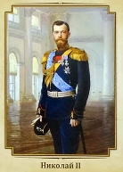

Владимир Святославич

Никола́й II (полное имя — Никола́й Алекса́ндрович Рома́нов; 6 (18) мая 1868, Царское Село — в ночь с 16 на 17 июля 1918, Екатеринбург) — Святой Русской Православной Церкви, последний император из династии Романовых, царствовавший с 21 октября (2 ноября) 1894 года по 2 марта (15 марта) 1917 года.
После свержения Николая II Российская империя прекратила свое существование и страна вступила в период гражданской войны.